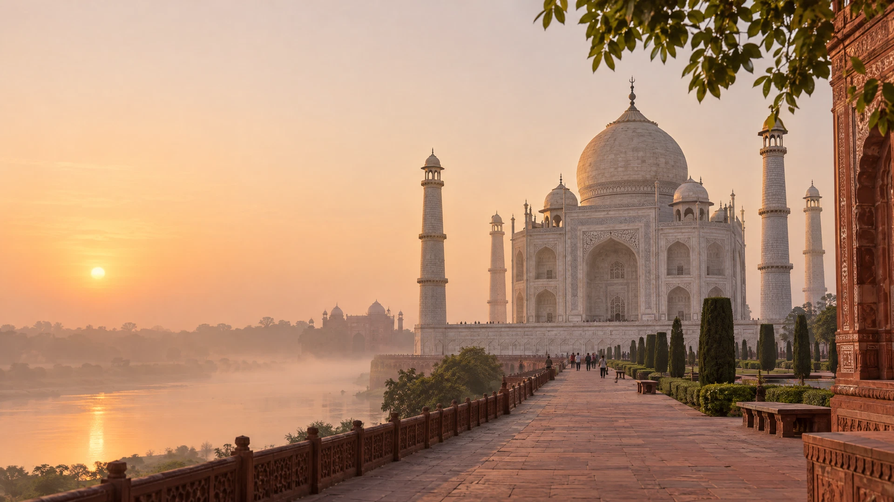
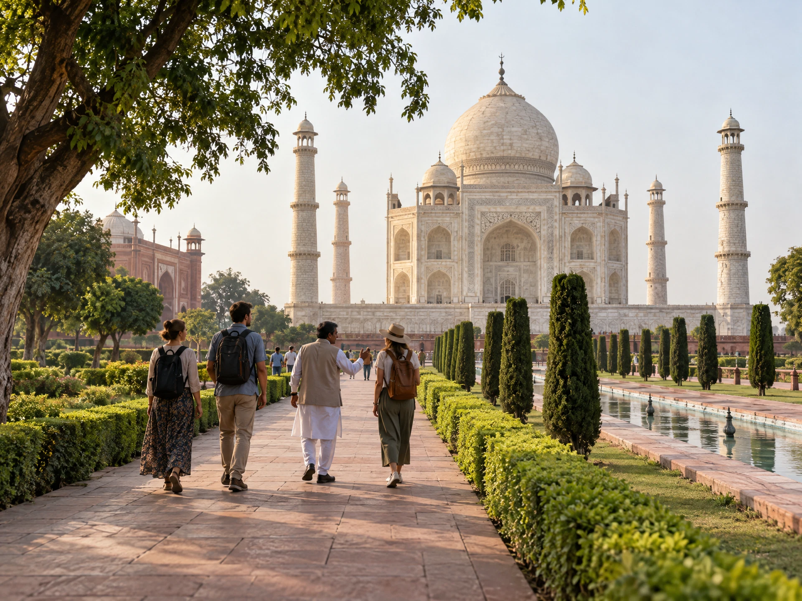
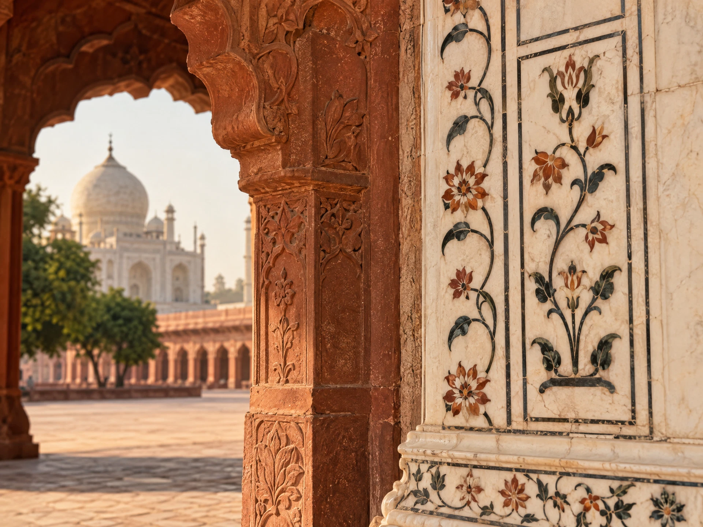

MOST REQUESTED
Sunrise Taj Mahal Tour
Beat the heat, admire the changing marble hues at dawn, and explore with a certified local storyteller guide.

THE IMPERIAL CITY OF AGRA
Discover the Mughal capital of white marble, red fortresses, and living artisan heritage. Private tours with certified historian guides, direct WhatsApp booking, and 100% no forced commercial shopping stops.
THE AGRA FLEET
Agra was the grand imperial capital of the Mughal Empire. Beyond the Taj Mahal, the city holds four more architectural wonders.
Pure Makrana marble wonder adorned with Quranic calligraphy and semi-precious stone inlay.

94-acre red sandstone palace citadel of Akbar, Jahangir, and Shah Jahan's royal quarters.

Akbar's deserted royal capital city featuring the monumental 54-meter Buland Darwaza.
The 'Baby Taj' jewel box — the very first Mughal monument built entirely of white marble.
Moonlight riverside garden offering the finest crowd-free sunset reflection views of the Taj.
CURATED ITINERARIES
Skip the middleman platforms. Book directly with local Agra tour planners for customized timing, certified guides, and clear pricing.
Beat the heat, admire the changing marble hues at dawn, and explore with a certified local storyteller guide.
Door-to-door private AC sedan/SUV from Delhi hotel or DEL Airport with Taj Mahal, Agra Fort, and return plan.
More pauses, less rushing, battery cart assistance, and a relaxed sequence for guests traveling with elders or children.
Hire a licensed DOT guide fluent in English, French, Spanish, Russian, or German with complimentary photography assistance.
LIVING HERITAGE CRAFT
When Shah Jahan built the Taj Mahal, master artisans developed Parchin Kari — carving fine recesses into pure Makrana white marble, hand-inlaying cut facets of semi-precious Lapis Lazuli, Malachite, Jasper, Cornelian, and Onyx with invisible tolerances.
Today in Agra, the direct descendants of the royal Mughal craftsmen still practice this craft. On our private tours, you can observe traditional gem-shaping on wooden bow-lathes — with zero commercial purchase pressure.
THE TAJMAHAL.CITY DIFFERENCE
Big booking portals charge 25% commissions and assign random sub-contractors. We are local Agra natives offering honest planning and direct communication.
VISITOR ESSENTIALS
No, the Taj Mahal is closed every Friday for general visitors. However, Agra Fort, Fatehpur Sikri, and Itimad-ud-Daulah (Baby Taj) remain open on Fridays, making alternative day trips possible.
Standard foreign tourist entry is ₹1,100 + ₹200 for main mausoleum access (total ₹1,300). Indian citizens pay ₹50 + ₹200 for main dome access (total ₹250). Children under 15 enter free. We assist with instant online ticketing to bypass ticket counters.
Includes private AC car (Sedan/SUV), licensed chauffeur, Delhi hotel or airport pickup & drop-off, all expressway tolls, parking fees, and a dedicated local certified tour guide in Agra.
Yes! All our guides are experienced in framing the most famous Taj Mahal shots, including the central Diana seat, water reflection pools, and Mughal minaret perspectives.